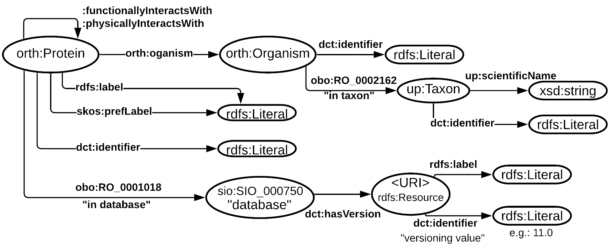
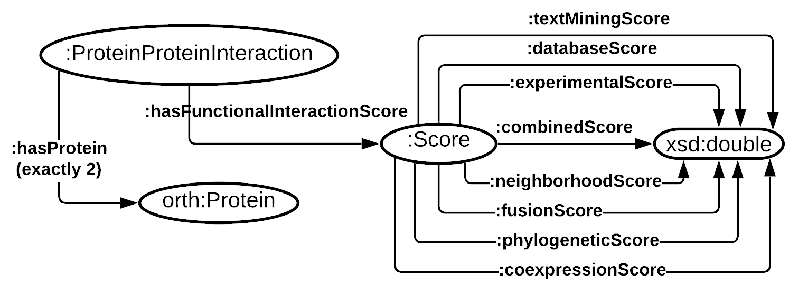
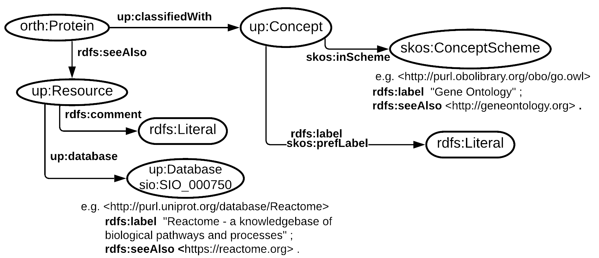

- This version:
- http://purl.org/stringdb/0.2
- Latest version:
- http://purl.org/stringdb
- Revision:
- STRING database Web API ontology
- Authors:
- http://purl.org/query/tarcisiomf
- Imported Ontologies:
- lscr
- Download serialization:


- License:

- Visualization:

- Cite as:
- http://purl.org/query/tarcisiomf. Revision: STRING database Web API ontology. Retrieved from: http://purl.org/stringdb/0.2
Abstract
This ontology was designed to represent and describe the information retrieved from the STRING database WEB API functions. The WEB API functions are fully described at https://string-db.org/help/api/.Introduction back to ToC
This ontology is composed of graph patterns and terms from several vocabularies such as ORTH ontology, UniProt core ontology, and OBO foundry ontologies. Nevertheless, solely terms and patterns relevant to represent the information retrieved from STRING DB Web API is depicted in this document and ontology. Therefore, we do not directly import (via owl:import) the external ontologies.Namespace declarations
| : | <http://purl.org/stringdb#> |
| 2020-04-23 | <http://purl.obolibrary.org/obo/obi/2020-04-23> |
| lscr | <http://purl.org/lscr#> |
| owl | <http://www.w3.org/2002/07/owl#> |
| wiki | <https://en.wikipedia.org/wiki> |
| xsd | <http://www.w3.org/2001/XMLSchema#> |
| skos | <http://www.w3.org/2004/02/skos/core#> |
| rdfs | <http://www.w3.org/2000/01/rdf-schema#> |
| taxonomy | <http://purl.uniprot.org/taxonomy> |
| manual | <http://www.uniprot.org/manual> |
| database | <http://purl.uniprot.org/database> |
| ensembl | <http://rdf.ebi.ac.uk/terms/ensembl> |
| pubmed | <http://www.ncbi.nlm.nih.gov/pubmed> |
| docs | <https://www.uniprot.org/docs> |
| dct | <http://purl.org/dc/terms/> |
| purl-org | <http://purl.org> |
| foaf | <http://xmlns.com/foaf/0.1/> |
| orth | <http://purl.org/net/orth#> |
| oboInOwl | <http://www.geneontology.org/formats/oboInOwl> |
| sio | <http://semanticscience.org/resource/> |
| query | <http://purl.org/query#> |
| www-ebi-ac-uk | <https://www.ebi.ac.uk> |
| efo | <http://www.ebi.ac.uk/efo> |
| up | <http://purl.uniprot.org/core/> |
| help | <https://www.uniprot.org/help> |
| rdf | <http://www.w3.org/1999/02/22-rdf-syntax-ns#> |
| obo | <http://purl.obolibrary.org/obo/> |
| dc | <http://purl.org/dc/elements/1.1/> |
| snap | <http://www.ifomis.org/bfo/1.1/snap> |
String database ontology: Overview back to ToC
This ontology has the following classes and properties.Classes
- Cluster of homologous sequences
- Concept
- Concept Scheme
- database
- Database (description of)
- Gene
- gene
- homology relation
- material entity
- network image
- Organism
- Organism
- polypeptide
- Protein
- protein
- protein
- protein-protein interaction
- protein-protein interaction enrichment
- Resource
- score
- Sequence unit
- Taxon
- Transcript
Object Properties
- classified with
- contained in
- database
- functionally interacts with
- has
- has functional interaction score
- has homolog
- has homologous member
- has homology data
- has network image
- has part
- has physical interaction score
- has protein
- in dataset
- in taxon
- interacts with
- is homologous member
- is in scheme
- member of
- organism
- part_of
- physically interacts with
- rank
- replaces
Data Properties
- average node degree
- bit-score
- coexpression score
- combined score
- database score
- Description
- edge amount
- edge amount
- expected edge amount
- experimental score
- format
- gene fusion score
- gene neighborhood score
- Mnemonic
- network flavor
- network type
- p-value
- partial score
- phylogenetic profile score
- protein amount
- resolution
- scientific name
- text mining score
Annotation Properties
- alt label
- alternative label
- close match
- creator
- curator note
- Date Issued
- definition
- definition
- Description
- editor note
- example
- example of usage
- has_alternative_id
- has_dbxref
- has_exact_synonym
- has_related_synonym
- has_synonym
- i a o 0000111
- i a o 0000119
- License
- max qualified cardinality
- note
- page
- preferred label
- related match
- scope note
- see also EMBL sequence
- see also Ensembl cross-reference
- see also Ensembl gene
- see also Ensembl protein
- see also Ensembl transcript
- see also MBGD cross-reference
- see also MBGD gene
- see also MBGD gene group
- see also NCBI cross-reference
- see also NCBI gene
- see also NCBI protein
- see also NCBI RefSeq
- see also OMA cross-reference
- see also OMA group
- see also OMA protein
- see also UniProt cross-reference
- source definition
- term editor
Named Individuals
- Gene Ontology
- Homo sapiens
- Integrated resource of protein families, domains and functional sites
- KEGG: Kyoto Encyclopedia of Genes and Genomes
- p-value
- Pfam protein domain database
- PubMed publications
- Reactome - a knowledgebase of biological pathways and processes
- Simple Modular Architecture Research Tool; a protein domain database
- STRING database
- UniProt Keywords
String database ontology: Description back to ToC
Figure 1 illustrates a data schema to represent protein information from the STRING database (DB). The information it can structure is restricted to the one available from STRING database WEB API are defined(see https://string-db.org/help/api/). In Figure 2, similarly to Figure 1, we abstractly illustrate the triple patterns to represent the core information from the STRING DB: protein to protein interactions.

